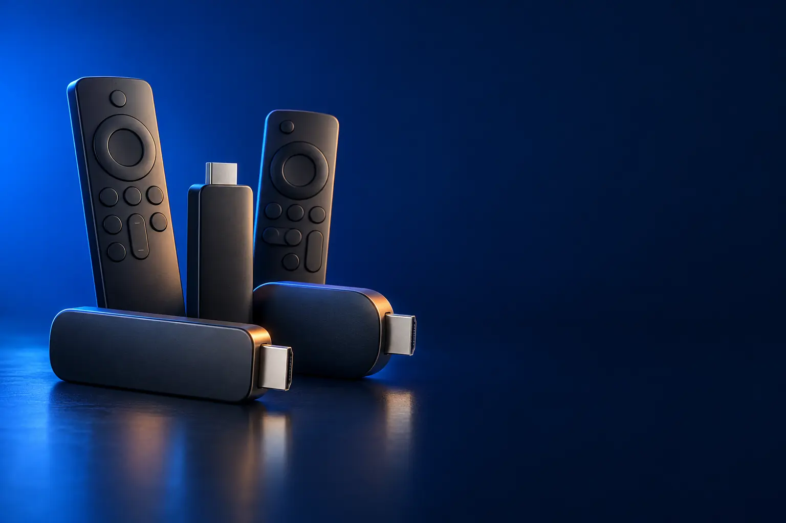

PARA TV FULL HD
Melhor Fire TV Stick custo-benefício (e alternativas) para TV Full HD
Deixa a TV comum smart: Netflix, Prime Video, YouTube e Globoplay.

Melhor custo-benefício para TV Full HDIntelbras Izy Play Stick Full HD
CURADORIA TECHAPROVADO · 2026
Um stick de streaming deixa qualquer TV com Netflix, Prime Video e YouTube. Separamos 4 modelos em 2 perfis e dizemos para quem cada um vale a pena.

NOSSA LEITURA
Em TV Full HD, um stick Full HD basta. Em TV 4K, só um aparelho 4K mostra a imagem completa. Depois, escolha a plataforma: Fire TV (Alexa), Android TV (Google) ou Roku.
COMECE POR AQUI
PARA TV FULL HD
Deixa a TV comum smart: Netflix, Prime Video, YouTube e Globoplay.
PARA TV 4K
Para aproveitar a imagem 4K, o HDR e o som de cinema da TV.

A FICHA, TRADUZIDA
01 - RESOLUÇÃO
Um stick Full HD mostra até 1080p; um aparelho 4K mostra a resolução da TV 4K. Se a TV é Full HD, um aparelho 4K não deixa a imagem melhor.
Em TV 4K, um stick Full HD funciona, mas desperdiça a tela: a imagem fica igual à de uma TV comum.
HDR e Dolby Vision deixam claros e escuros mais detalhados, mas só se a TV também for compatível. Confira no manual da TV.
02 - PLATAFORMA
Todos têm os principais apps: Netflix, Prime Video, YouTube, Disney+, HBO Max e Globoplay. O que muda é a tela inicial e o assistente de voz.
Fire TV usa Alexa e destaca o Prime Video. Android TV usa Google Assistente e tem a Play Store. Roku é o mais simples, com os apps em blocos.
Se você já tem Echo ou Google Nest em casa, escolha a plataforma do mesmo assistente para comandar a casa pela TV.
03 - INTERNET
Streaming Full HD pede cerca de 5 Mbps; 4K pede 15 a 25 Mbps estáveis. Wi-Fi fraco atrás da TV causa travamentos em qualquer aparelho.
Se o roteador estiver longe, prefira Wi-Fi 5 GHz ou um adaptador de cabo de rede (vendido à parte para alguns sticks).
Jogos na nuvem, como o Xbox Game Pass, pedem conexão ainda melhor e de baixa latência.
04 - ALIMENTAÇÃO
Alguns sticks podem ser alimentados pela porta USB da própria TV, o que deixa a instalação sem fios extras.
Se a TV desliga a USB quando é desligada, o stick reinicia a cada uso e demora mais para abrir. Nesse caso, use a fonte na tomada.
Para pendurar atrás da TV, um extensor HDMI curto evita forçar a porta e melhora o sinal de Wi-Fi.
A CURADORIA EM DETALHE
4 modelos da pesquisa
PERFIL · 3 MODELOS, DA ENTRADA AO TOP DE LINHA
Os sticks e boxes Full HD transformam uma TV comum em smart TV, ou dão vida nova a uma smart TV lenta. Ligam na entrada HDMI e trazem os principais aplicativos de streaming e controle remoto por voz.
FULL HD · CUSTO-BENEFÍCIO 1 de 3
Melhor custo-benefício para TV Full HD
Android TV 11 · Google Assistente · controle por voz
Ver preço na AmazonPOR DENTRO DA ESCOLHA
Stick Full HD com Android TV 11, homologado pelo Google e pela Netflix, controle remoto Bluetooth com voz e Google Assistente.
Por ser Android TV homologado, tem acesso à Play Store e aos apps oficiais de streaming.
| Resolução | Full HD |
|---|---|
| Sistema | Android TV 11 |
| Voz | Google Assistente |
Fonte: ficha e descrição do anúncio, conferidas em 02/11/2026. Dados informados pelo fabricante.

FULL HD · ALTERNATIVA 2 de 3
Outro caminho: o mais simples de usar
Plataforma Roku · alimentado pela USB da TV · controle com voz
Ver preço na AmazonPOR DENTRO DA ESCOLHA
Stick compacto que não bloqueia as entradas HDMI vizinhas e pode ser alimentado pela porta USB da TV. O controle liga a TV, ajusta o volume e pesquisa por voz.
A plataforma Roku é a mais simples de navegar.
| Resolução | HD/Full HD |
|---|---|
| Sistema | Roku |
| Energia | USB da TV |
| Voz | Pesquisa no controle |
Fonte: ficha e descrição do anúncio, conferidas em 02/11/2026. Dados informados pelo fabricante.

FULL HD · TOP DE LINHA 3 de 3
Top de linha Full HD
Alexa+ · Xbox Game Pass · Fire TV 2026
Ver preço na AmazonPOR DENTRO DA ESCOLHA
O stick HD mais rápido da Fire TV, com a nova interface lançada em 2026, controle remoto com Alexa (com acesso antecipado à Alexa+), Prime Video, Netflix, YouTube, Disney+, HBO Max, Globoplay e jogos Xbox pelo Game Pass na nuvem.
O diferencial é o ecossistema: Alexa no controle, comando das luzes da casa pela TV e jogos na nuvem.
| Resolução | Full HD |
|---|---|
| Sistema | Fire TV |
| Voz | Alexa |
| Jogos | Xbox Game Pass na nuvem |
Fonte: ficha e descrição do anúncio, conferidas em 02/11/2026. Dados informados pelo fabricante.
PERFIL · 1 MODELOS, DA ENTRADA AO TOP DE LINHA
Em uma TV 4K, um aparelho de streaming 4K entrega a resolução completa, HDR e som Dolby Atmos. Hoje a linha 4K à venda é pequena, e o modelo novo da Fire TV ainda é recente.
4K · TOP DE LINHA 1 de 1
Melhor custo-benefício em 4K hoje
4K Dolby Vision e HDR10+ · Dolby Atmos · chip A15
Ver preço na AmazonPOR DENTRO DA ESCOLHA
Aparelho de streaming 4K com Dolby Vision e HDR10+, som Dolby Atmos, chip A15 Bionic e Siri Remote com clickpad sensível ao toque.
É a única opção 4K que passou nos nossos filtros. Para quem não usa iPhone, vale esperar o Fire TV Stick 4K novo ficar mais conhecido.
| Resolução | 4K, Dolby Vision, HDR10+ |
|---|---|
| Som | Dolby Atmos |
| Chip | A15 Bionic |
| Armazenamento | 64 GB |
Fonte: ficha e descrição do anúncio, conferidas em 02/11/2026. Dados informados pelo fabricante.
Nenhum modelo encontrado. Tente outro termo ou volte para Todos.
LADO A LADO
| Modelo | Perfil | Posição | Resolução | Destaque |
|---|---|---|---|---|
| Intelbras Izy Play Stick Full HD | Full HD | Custo-benefício | Full HD | Android TV 11 · Google Assistente · controle por voz |
| Roku Streaming Stick HD (2025) | Full HD | Alternativa | HD/Full HD | Plataforma Roku · alimentado pela USB da TV · controle com voz |
| Amazon Fire TV Stick HD (modelo mais recente) | Full HD | Top de linha | Full HD | Alexa+ · Xbox Game Pass · Fire TV 2026 |
| Apple TV 4K (3ª geração) 64 GB | 4K | Top de linha | 4K, Dolby Vision, HDR10+ | 4K Dolby Vision e HDR10+ · Dolby Atmos · chip A15 |
CONSIDERAÇÕES FINAIS
O Fire TV Stick 4K (modelo mais recente) ainda era muito novo na data da conferência e ficou de fora; voltaremos a ele mais adiante. TV boxes Android genéricos ficaram fora por estoque baixo ou falta de informação de homologação.
Vale para quem usa Alexa e Prime Video. Para gastar menos, o Izy Play Stick e o Roku Stick HD entregam os mesmos apps principais.
O Intelbras Izy Play Stick para TV Full HD. Para TV 4K, a opção que passou nos nossos filtros foi a Apple TV 4K.
Em qualquer TV com entrada HDMI e acesso a Wi-Fi.
Para ver em 4K, sim. Em TV Full HD, a imagem fica igual à do Fire TV Stick HD.
Porque ele muda várias vezes por dia. O botão leva ao valor atualizado na loja.
TRANSPARÊNCIA EDITORIAL
Separamos os aparelhos pela resolução da TV e comparamos o Fire TV Stick com as alternativas que passaram nos nossos filtros. Cada modelo precisa responder com clareza "para quem ele é o certo".
Em cada perfil há modelos em faixas de preço diferentes, e cada degrau precisa entregar algo que o anterior não entrega. Dois modelos com a mesma proposta não entram juntos.
Ficha e especificações foram conferidas nos anúncios das lojas em 02/11/2026.
Os links de compra desta página são de afiliado: se você comprar por eles, o TechAprovado pode ganhar uma comissão, sem custo adicional para você. Isso não muda a ordem nem a escolha dos produtos.
📲 GUIAS E DICAS NO SEU FEED
Dicas práticas antes de comprar, em carrosséis e vídeos curtos, sempre com link para o guia completo.